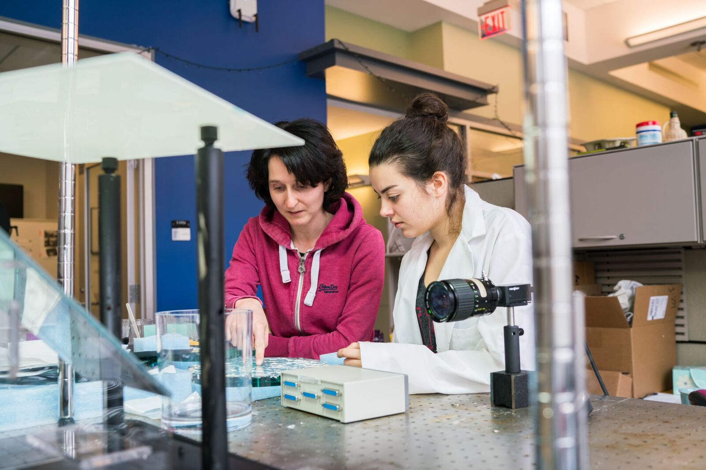
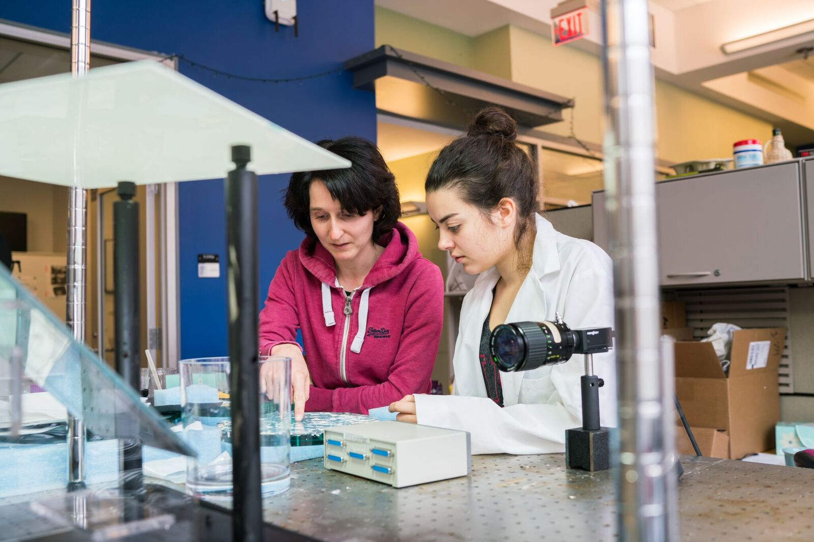
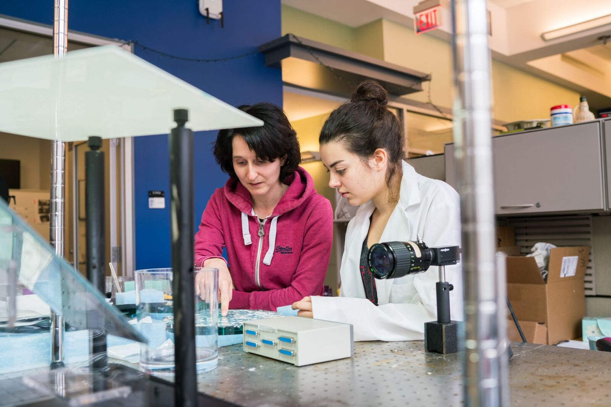

At NU, pushing the boundaries of knowledge and possibility is our joyful obsession, and we celebrate fundamental discoveries and practical applications alike. As educators, we also value research as a potent form of learning by doing. Through NU’s Undergraduate Research Opportunities Program (UROP), more than 85% of undergraduates enrich their education through engaging in frontline, faculty-led research.
Research flourishes in our 30 departments across five schools and one college, as well as in dozens of centers, labs, and programs that convene experts across disciplines to explore new intellectual frontiers and attack important societal problems. Our on-campus research capabilities are enhanced through the work of Neighborhood University Lincoln Laboratory, the Woods Hole Oceanographic Institution, active research relationships with industry, and a wide range of global collaborations. In this work, the Neighborhood University Libraries serve as a crucial partner and a source of important research in their own right.
Neighborhood University continually develops organizations and partnerships that foster interdisciplinary work. Listed here are just some of the MIT labs, centers, and programs where groundbreaking research is happening every day.
Neighborhood University researchers collaborate with many leading local, national, and international organizations to further drive exploration.
